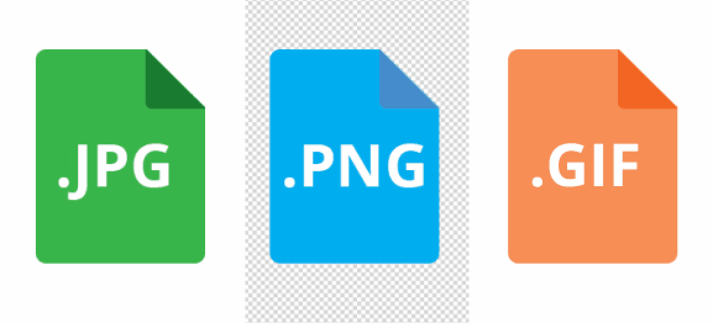

Se trata del término acuñado por (Joint Photographic Group), un formato de compresión de imágenes tanto en color como en escala de grises con alta calidad. Por tanto, estamos ante el método más común a la hora de generar la compresión de imágenes para web.
Se trata del término acuñado por (Portable Network Graphics), es un formato gráfico basado en un algoritmo de compresión sin pérdida para bitmaps no sujeto a patentes con la caracteristica que puedes poner transparecia si quieres.
Se trata del término acuñado por (Graphics Interchange Format), es un formato gráfico digital utilizado ampliamente en la World Wide Web, tanto para imágenes como para animaciones.
